Claude Code 代码检索图解：为什么用 grep 而不用 RAG？
大家好，我是小林。
前阵子，有个林友跟我聊起他面试字节 AI Agent 岗的经历。
被面试官问了一个问题：「为什么 Claude Code 不用 RAG 检索代码，而是直接用 grep？」
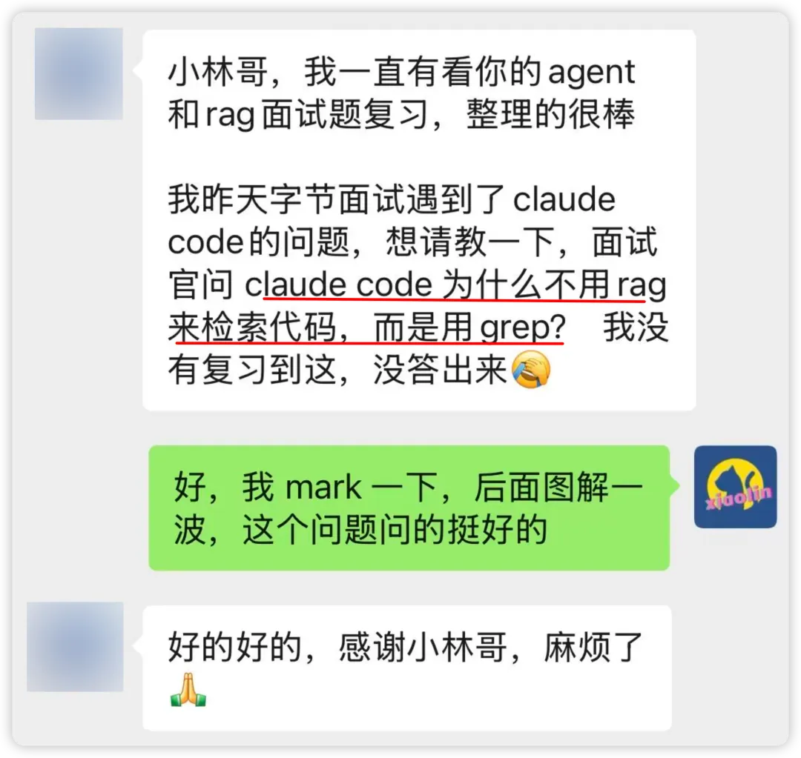
我一愣。
是啊，这两年 RAG 火成这样，几乎成了 Agent 的标配。谁去做个 AI 编程工具不上 RAG？
结果 Claude Code 这么个被业内认证「最好用的 AI 编程工具之一」，反其道而行，连 embedding 和向量数据库的影子都没有，就靠 grep 加读文件这种最朴素的方式来获取代码上下文。
是 Anthropic 没钱搞向量库吗？显然不是。
是工程师水平不够吗？更不可能。
那这背后到底是什么设计哲学？为什么他们偏偏不用 RAG？
我把 Claude Code 的检索相关源码翻了个底朝天，越看越觉得这个选择很有意思。
今天就从源码视角，带你一层层拆开这个问题我会按这个顺序展开：
- 先搞懂代码检索到底要解决什么？
- 看 RAG 派是怎么干的？ RAG 在代码场景有什么坑 ？
- Claude Code 是怎么反向思考的？
- Claude Code 检索三件套怎么组合 ？
- Claude Code 派子 agent 去检索是怎么回事？
读完这篇文章，你不光能答出这道面试题，还能理解 Anthropic 对「Agent 应该长成什么样」的整套思路。
一、先搞懂「代码检索」到底要解决什么问题
很多人一上来就跳进 RAG 和 grep 的对比，但我觉得这样讲很容易让人迷糊。
不如咱们先退一步，把问题本身搞清楚：什么叫代码检索？为什么 Agent 写代码非得有这一步？
你想啊，你打开 Claude Code，跟它说「帮我把 UserService 里那个登录方法改一下，加个验证码逻辑」。模型要完成这个任务，第一件事得是什么？
得是「找到 UserService 这个文件、找到登录方法的具体代码」。代码都没看到，怎么改？
但问题来了：模型自己又不能直接「看」磁盘上的代码，它只能看到你塞进上下文里的文字。
那你说，那把整个项目的代码全塞进去不就完了？
理论上是这么个理。但 LLM 的上下文窗口是有限的。就算用 Claude Opus 4.7 这种已经支持 1M token 的超长上下文模型，听着是真的大对吧？换算一下大概有 200 多万字。但你想想，一个稍微像样点的项目动辄几百万行代码，再算上依赖库源码就更夸张了，光是这些就远超模型的承载量，更别说还要留位置给系统提示、对话历史、工具调用结果。
塞不下，还是塞不下。
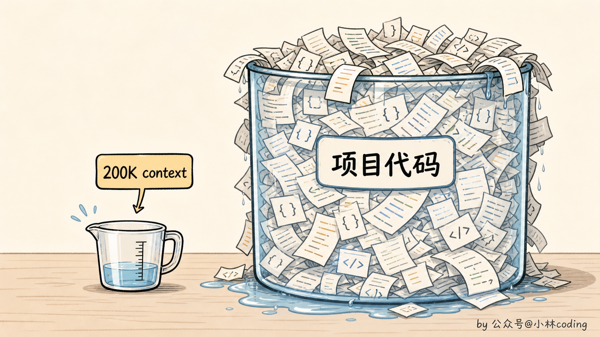
上下文窗口 vs 代码库体积对比图
所以代码检索这一步就出来了：从一堆代码里，精准地捞出和当前任务相关的几个片段，再塞给模型。
这有点像你查字典。一本汉语词典几千页，你不会从头读到尾，而是先翻目录、看拼音索引，定位到「龘」这个字所在的那一页，然后只读那一页。代码检索干的就是这个活儿。
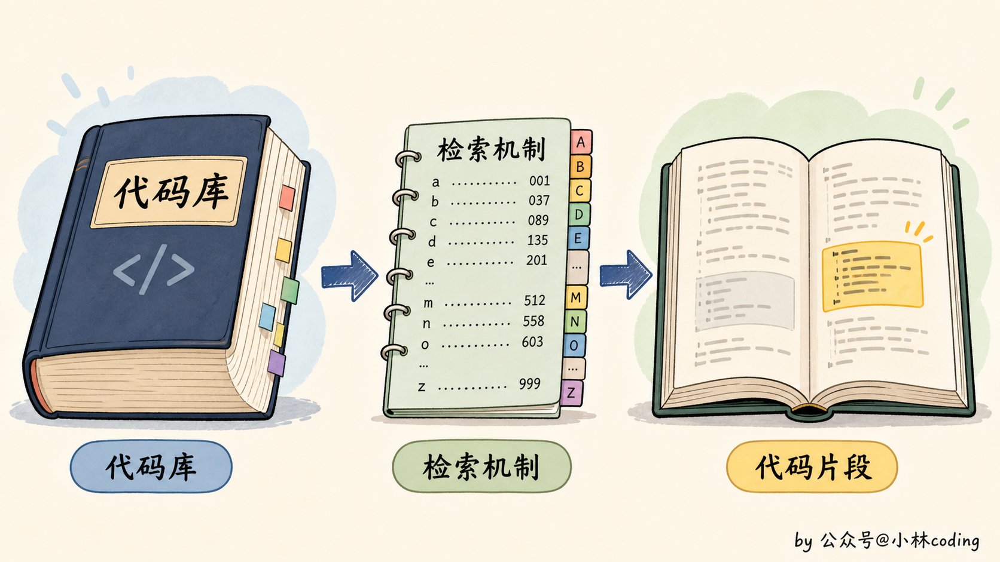
字典查目录类比图
那「怎么查目录」、「怎么定位到那一页」，就是不同方案的差异所在了。
二、绕不开的 RAG：「先建库再查」的经典思路
说到检索，做过 AI 应用的同学第一反应肯定是 RAG。这玩意儿现在是 Agent 圈的「网红技术」，几乎一提到「让 LLM 用外部知识」，就想到它。
那 RAG 到底是怎么做的？我用一个图书馆的故事给你讲明白。
想象你是一个图书馆的管理员。馆里有几十万本书，读者来问「我想看一本关于宋代茶文化的书」，你怎么办？
你不可能跑遍整个馆每本书翻一遍。最聪明的做法是：提前把每本书都做好分类卡片。卡片上写清楚书名、作者、关键词、内容摘要，按主题归类好放进抽屉里。读者一来，你照着卡片找对应的抽屉，几分钟就能把书翻出来。
RAG 在代码场景下，干的就是这个事儿。它的工作流可以拆成四步。
第一步，切片（Chunking）。
先把代码文件按某种规则切成小片段。常见的切法是按函数切、按类切，或者按固定行数切，比如每 100 行一段。这相当于把厚厚的书拆成一篇篇文章。
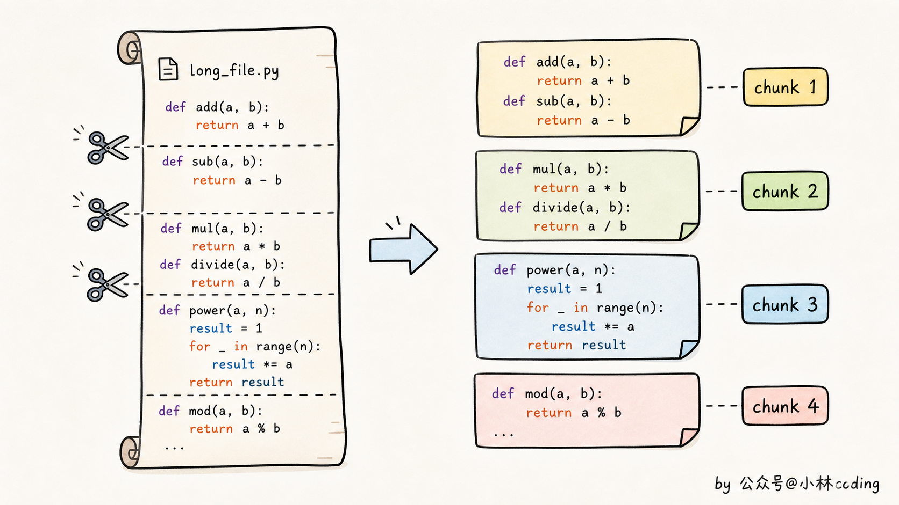
第二步，向量化（Embedding）。
每个代码片段过一遍 embedding 模型，转成一串数字（一个高维向量）。你可以理解成给每个片段算了一个「语义指纹」，意思相近的片段，指纹也相近。
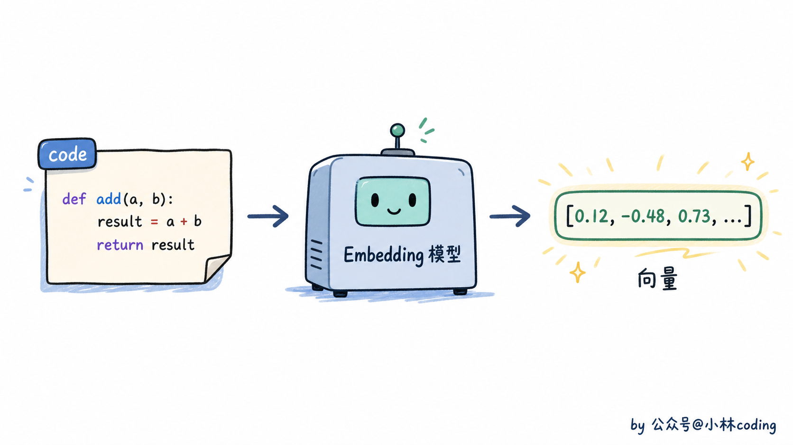
Embedding 演示：代码经过模型变成数字向量
第三步，建索引（Indexing）。
把所有的向量存到一个专门的向量数据库里，比如 Faiss、Pinecone、Milvus 这些。这一步就是「把分类卡片整理好，按抽屉摆放」。
第四步，召回（Retrieval）。
用户提问的时候，把问题也向量化一下，去库里找最相似的 Top-K 个片段，比如最像的 5 个，然后把这几段代码拼到 prompt 里，丢给 LLM。
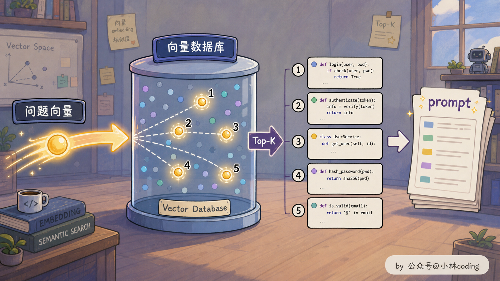
向量召回 Top-K 示意图
讲到这里，你可能已经看出 RAG 的核心套路了。
它把「找代码」这件事，转成了「算相似度」。所有的检索逻辑，最后都归结为「在向量空间里找最近的几个邻居」。
这套思路在很多场景下确实好使。比如你做一个客服机器人，公司内部有一万篇 FAQ 文档，用户问问题，RAG 拍拍脑袋就能给你召回最相关的几篇，效果妥妥的。
那放到代码上呢？是不是也一样无敌？
别急，下一节咱们就来扒它的痛处。
三、RAG 在代码场景下的「水土不服」
如果 RAG 真的完美适合代码场景，那 Claude Code 早就上了。问题是它有一堆坑，咱们一个一个看。
痛点 1：代码不像散文，切不动
文章是流式的，你拦腰切一刀，损失不大，前后段都还能独立读。但代码不一样，代码是有严格结构的。
举个例子，一个函数 200 行，按 100 行一段切了。结果上半段是个 if 的开头，下半段是 else 的结尾，模型看到的两个片段，一个少了 else，一个少了 if，这玩意儿压根没法用。
更糟糕的是，函数 A 调用了函数 B，但是 A 和 B 在不同片段里。模型只看到 A，根本不知道 B 是干嘛的，幻觉概率直接拉满。
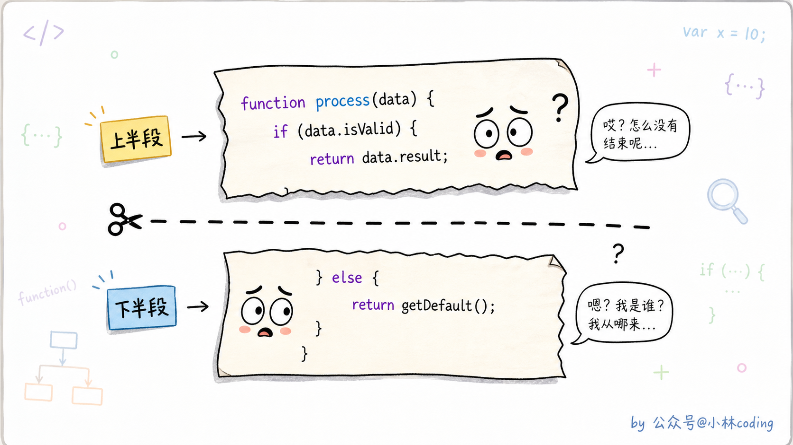
函数被切两半示意图
痛点 2：精确匹配的活，向量干不了
向量召回的本质是「找相似的」，不是「找对的」。这在代码场景就麻烦了。
你跟 Claude Code 说：「帮我看下 getUserById 这个函数的实现」。
向量召回会怎么干？它会找一堆「跟用户相关的查询函数」给你：getUserByName、getUserByEmail、fetchUserInfo、queryUser，啥都来一遍。但你要的就是 getUserById 这一个具体的函数啊。
这就好比你跟同事说「帮我叫一下张三」，结果他把李四王五马六全叫过来了，因为他们都是同事。
向量擅长「模糊」，但代码很多时候要的就是「精确」。
配图意见：向量召回错误示意，用户问「找张三」，结果向量库返回「李四王五马六」
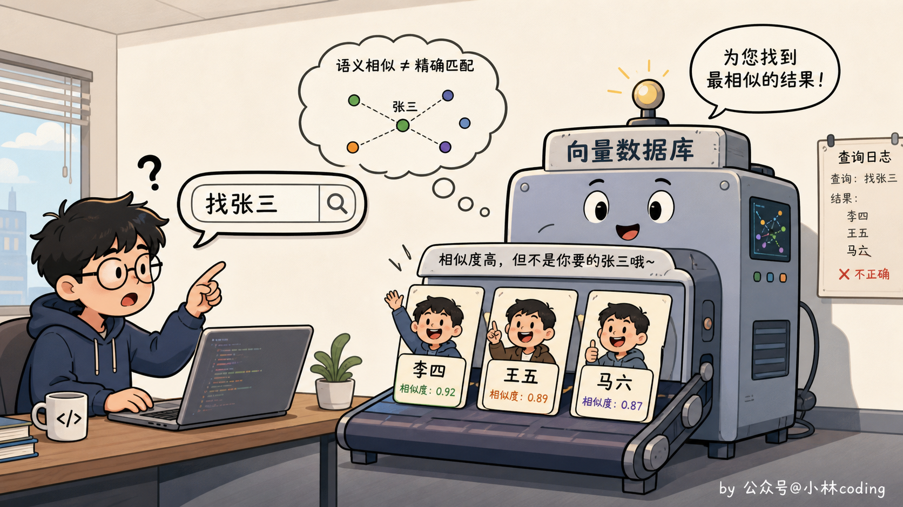
向量召回错误示意图
痛点 3：代码每天在变，索引咋办
这是 RAG 在代码场景的另一个噩梦。
你建好索引了，开发同学一个 commit 改了 20 个文件，新增 3 个函数。索引怎么办？
要重建？整个项目重新切片、重新 embedding，成本不低，频繁 commit 直接性能爆炸。
不重建？模型查到的全是旧版本，用过期信息写新代码，bug 不写都难。
要做增量更新？听着合理，但实现起来一堆边界情况：哪些 chunk 要删、哪些要重新算、跨文件的引用关系怎么同步。说白了，简单事情搞复杂了。
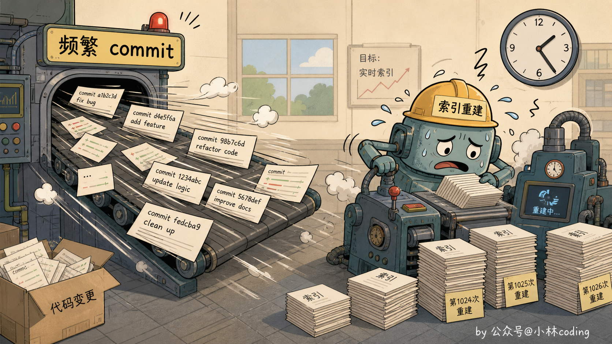
索引重建成本图
痛点 4：冷启动慢得要命
你在一个百万行的代码库上跑 RAG，光是建索引就要十几分钟甚至更久。
用户打开工具，看着进度条转，等几分钟才能开始用？这体验直接劝退一半人。Claude Code 的设计理念是「打开就能用」，RAG 这套显然不答应。
冷启动等待图
痛点 5：黑盒，不可解释
这点我觉得最关键。
向量召回回来 5 个片段，你问为什么是这 5 个？没人答得上来。是因为 cosine 相似度高？那为什么这 5 个比那 5 个高？模型说不清，工程师也说不清，因为这玩意儿是黑盒。
出了 bug 你都不知道从哪儿查起。模型答错了，是召回错了？还是召回对了但模型理解错了？追溯链路非常痛苦。
总结一下：RAG 在「静态文档、自然语言、模糊匹配」这种场景是利器，但代码恰好是反过来的，是动态、结构化、需要精确的。RAG 在代码上不是不能用，是用得很别扭。
那不用 RAG，又怎么搞代码检索呢？
四、Claude Code 的反向思路：把检索还给模型自己
在讲 Claude Code 的方案之前，我想先抛个反问：你是怎么定位代码的？
我猜大部分程序员的工作流是这样的。
接手一个陌生项目，第一件事先看下目录结构，ls 一下心里有个数。要找某个功能在哪实现，第一反应是 grep -r 全局搜个关键字。grep 出一堆候选文件，挨个 cat 看下哪个最像。找到了，再用编辑器跳转打开，前后翻翻看上下文。
整个过程就是「找文件 → 找内容 → 看具体代码」三件套，循环往复，直到你找到目标。
注意一下：你没有提前给整个项目建索引、做向量化吧？没有。你就是「现用现找」。
那你猜 Claude Code 的检索哲学是什么？
简单到让人意外：让模型像程序员一样，自己去找。
不预处理、不建库、不算向量，每次需要代码就实时去现场查。工具就给三个：
- Glob：按文件名 pattern 找文件（对应你的
find） - Grep：按内容关键字找代码（对应你的
grep -r） - Read：按需读文件内容（对应你的
cat和编辑器跳转）
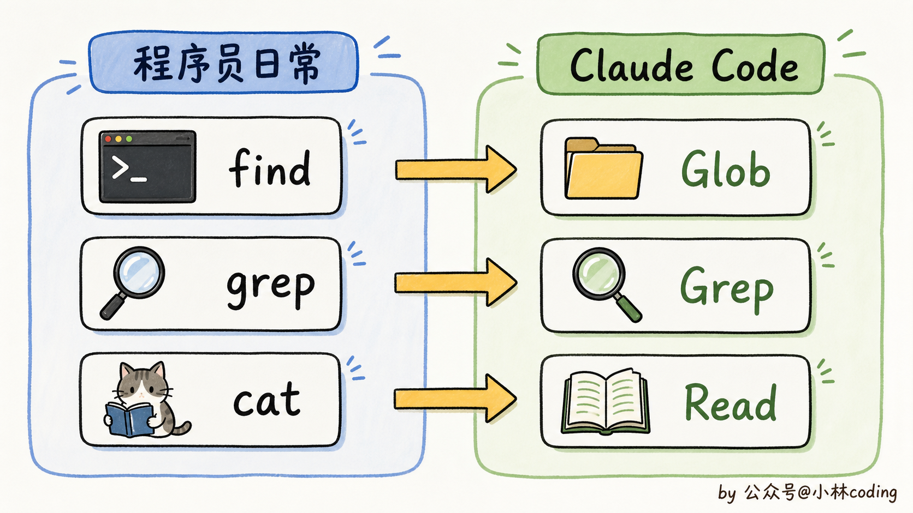
程序员工作流与 Claude Code 三件套对应关系
看似原始，但本质上是把「找代码」的决策权还给了 LLM。你不需要提前猜模型会问什么，也不需要给它装个「智能召回引擎」，模型自己想搜什么就搜什么，搜完看一眼结果，再决定下一步。
这思路简单到让你怀疑人生：就这？真的够用？
我一开始也这么想。但后面越扒源码越发现，这套「土味」工具背后藏着一堆精巧设计。下一节我们就把三件套挨个拆开。
不过先别急，这里我先埋个伏笔：单纯靠主 agent 自己一边 grep 一边 read，遇到大型项目会不会上下文爆炸？这个问题第六节再揭开。
五、Claude Code 检索三件套，到底怎么组合？
这一节有点长，因为三件套每个都有讲究。咱们先讲原理，最后再贴源码加深理解。
5.1 Grep：基于 ripgrep，但绝不是简单封装
讲 Grep 工具之前，我想先问你一个问题：既然 Claude Code 已经给模型开放了 Bash 工具，模型完全可以自己跑 grep -r "xxx" .，为啥还要单独包一个 Grep 工具？
这问题很多人没认真想过。但你仔细品，这里面有三层考虑。
第一层，权限统一管控。
Bash 是个万能工具，模型理论上能跑任何命令。如果让它自己跑 grep，那 rm 也能跑、curl 也能跑、git push 也能跑。Claude Code 把 grep 单独包成工具，相当于在这个高频操作上单独画了一道权限闸门，更安全。
第二层，输出格式可控。
你直接跑 bash grep，输出就是一坨纯文本。但 Grep 工具可以提供结构化输出：行号、上下文行、按文件分组、甚至支持「只返回匹配文件名」、「只返回匹配数量」三种粒度。模型按需选择，token 浪费少很多。
第三层，性能。
Claude Code 的 Grep 底层用的是 ripgrep，不是传统 grep。ripgrep 是 Rust 写的，多线程并行、自动尊重 .gitignore（不去搜 node_modules 这种垃圾目录），性能甩老牌 grep 几条街。
设计意图都讲完了，咱们看下源码 src/tools/GrepTool/prompt.ts 里的工具描述（这段会出现在模型的 system prompt 里，直接告诉模型怎么用）：
A powerful search tool built on ripgrep
- ALWAYS use Grep for search tasks. NEVER invoke `grep` or `rg` as a Bash
command. The Grep tool has been optimized for correct permissions and access.
- Output modes: "content" shows matching lines, "files_with_matches" shows
only file paths (default), "count" shows match counts
- Use Agent tool for open-ended searches requiring multiple rounds
中文意思大致是：
基于 ripgrep 打造的强力搜索工具
- 搜索任务请永远使用 Grep。绝对不要用 Bash 命令调用 `grep` 或 `rg`。
Grep 工具已经针对权限和访问做过优化。
- 输出模式："content" 返回匹配的具体行，"files_with_matches" 只返回
文件路径（默认），"count" 只返回匹配数量
- 开放式、需要多轮迭代的搜索，请用 Agent 工具
注意第二行那句话，「ALWAYS use Grep ... NEVER invoke grep or rg as a Bash command」，语气特别强硬对不对？
这就是 Anthropic 在用 system prompt 强制模型走专用工具，不许用 bash 抄近路。
最后一行也埋了个伏笔，「open-ended 多轮搜索请用 Agent 工具」，这个咱们第六节细聊。
配图意见：Grep 三种输出模式示意，content 模式给行号+内容，files 模式只给文件名列表，count 模式只给数字
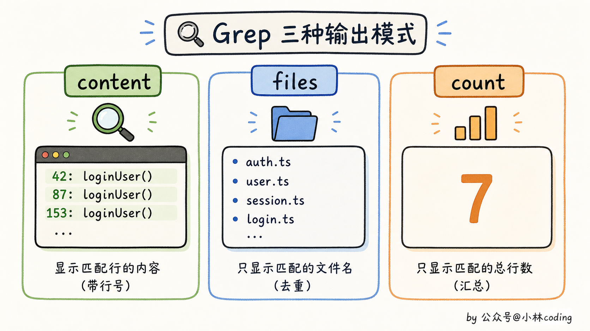
Grep 三种输出模式示意图
5.2 Glob：按文件名找，按修改时间排序
Grep 是按内容找，那 Glob 是干啥的？是按文件名找。
举个场景：你想看下项目里所有的 .tsx 文件有哪些。用 Grep 是不行的，因为你没有内容关键字，你只知道扩展名。这时候 Glob 就上场了，它支持 **/*.tsx 这种 pattern。
Glob 工具还有两个小巧思。
第一，结果按修改时间倒序排列。 也就是说，最近改过的文件排在前面。为啥这样？因为大部分时候，「最近改过的」就是「跟当前任务最相关的」。这是个很朴素但很有效的启发式规则。
第二，结果有 100 文件硬上限。 超出会截断，避免输出爆炸把上下文塞满。模型如果还想看更多，可以收紧 pattern 再搜一次。
是不是很像你平时用 IDE 的「最近打开文件」列表？设计哲学是相通的。
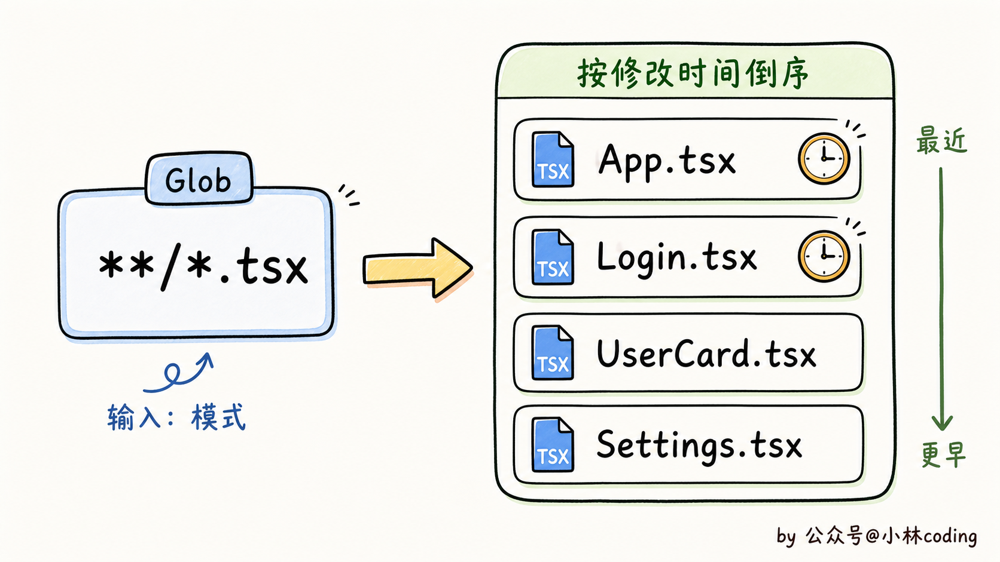
Glob pattern 示意图
5.3 Read：按需读取，绝不贪心
找到文件了，下一步就是看内容。Read 工具就是干这个的。
但 Read 的设计有个反直觉的地方：它默认只读 2000 行，超出会截断。
你可能要问：那要是文件 5000 行咋办？
很简单，模型可以指定 offset 和 limit 参数，分段读取。比如先读 1 到 2000 行看看大概结构，确定要看的具体位置，再 offset=3500, limit=500 精准读那一段。
这套设计的核心思想就一句话：模型应该按需读取，不要贪心。
源码 src/tools/FileReadTool/FileReadTool.ts 的工具描述里有这么一段原文：
By default, it reads up to 2000 lines starting from the beginning of the file.
When you already know which part of the file you need, only read that part.
This can be important for larger files.
中文意思大致是：
默认从文件开头读取，最多读 2000 行。
如果你已经知道需要文件的哪一部分，就只读那一部分。
对大文件来说，这一点特别重要。
「需要哪部分就只读哪部分」，这就是 Anthropic 在引导模型形成节约 token 的习惯。
还有一个非常关键的细节：Read 工具每次都直接 stat 磁盘文件、读取最新内容，不缓存、不索引、不预处理。
这意味着什么？意味着只要你刚改了文件，下一次 Read 立刻能看到新内容。这就是 Claude Code 实时性的来源。没有索引层，就没有索引滞后。
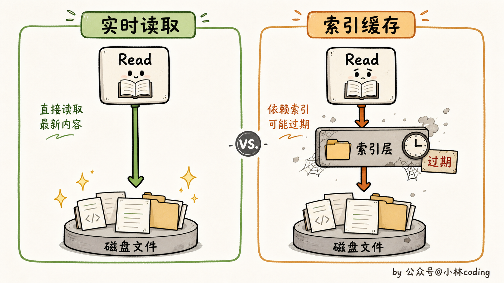
磁盘实时读取 vs 索引缓存对比图
5.4 三件套的组合用法
讲完单个工具，最关键的是看它们怎么组合。
我举一个真实场景：你跟 Claude Code 说「这个项目登录功能在哪实现的？」
它的检索过程大概是这样：
第一步，先用 Glob 找候选文件，比如 **/*login*.{ts,tsx,js}，可能拉回来 5 个候选文件。
第二步，用 Grep 在这些文件里搜关键字，比如 passport|auth|login，定位到具体的几个命中行。
第三步，用 Read 读命中文件的相关行段，看具体实现。
整个过程是模型一步步推进的：每一步看到上一步的结果，决定下一步搜什么、读什么。
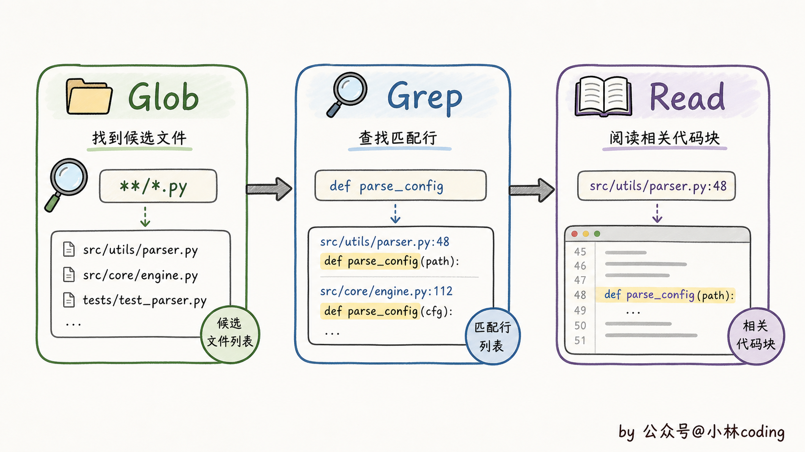
Glob Grep Read 三件套组合工作流
注意没有，这里没有「一次性召回所有相关代码」的步骤，而是「每一步都基于上一步的结果调整方向」。这是和 RAG 范式最大的不同点，我们第七节再细讲。
但是有个问题：如果是更复杂的任务呢？比如「调研一下整个项目的认证模块流程」，这种活儿三件套循环几次就能搞定吗？
下一节揭晓。
六、当三件套不够用：派子 agent 去探索
来想象这么一个场景：你跟 Claude Code 说「调研一下这个项目的认证模块整体流程」。
这种「调研」类任务有什么特点？需要看的东西多，要 grep 好几个关键词、读好几个文件、来回比对、最后总结成一段结论。整个过程可能要十几个工具调用。
如果让主 agent 自己一边 grep 一边 read 地干，会发生什么？
主 agent 的上下文很快就会被一堆 grep 输出加文件片段塞满。等它好不容易想清楚「认证流程」、要回头给你写代码的时候，发现真正要解决的问题已经被检索过程的中间结果挤到角落里了，模型注意力被分散，质量直线下降。
这就是大型探索任务的最大敌人：上下文污染。
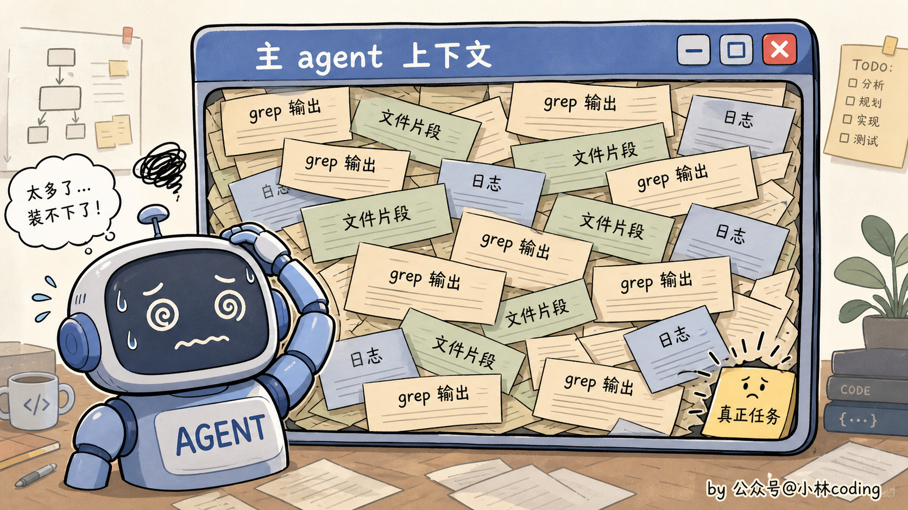
主 agent 上下文被污染示意图
Claude Code 的解决办法很妙：派一个子 agent 出去探索。
类比一下：老板要做战略决策，他要看大量的市场数据。他不会自己一头扎进 Excel 里翻几个小时，而是把这事派给秘书：「你帮我调研一下，明天给我一份精简报告」。秘书看了一堆资料，最后只把结论给老板。老板的注意力（对应主 agent 的上下文）就被保护起来了。
子 agent 的派遣机制具体是这样。
第一，主 agent 通过 Agent 工具派子 agent。 子 agent 是一个独立的运行实例，有自己的对话上下文，跟主 agent 完全隔离。
第二，子 agent 拿到一个精简的工具池。 通常是只读工具：Grep、Glob、Read、Bash（只读命令），但不能 Edit、不能 Write、不能再派子 agent（防止层层嵌套递归）。这种 agent 在源码里有个名字叫 Explore agent。
第三，子 agent 在自己的上下文里多轮迭代。 它可以 grep 几十次、read 几十次，过程中产生的中间结果都留在它自己的上下文里，跟主 agent 无关。
第四，子 agent 完成后，只把最终结论返回给主 agent。 主 agent 的上下文里只多了一段「认证流程是这样的：……」的精简结论，所有的搜索过程都被压缩没了。
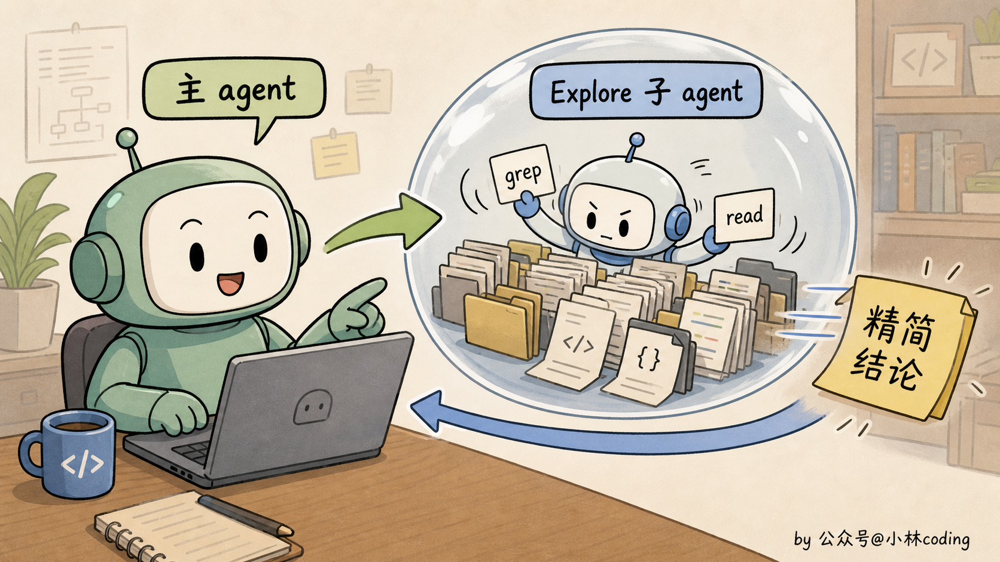
派子 agent 隔离与结论压缩示意图
这就是「上下文压缩」的精髓：用一个隔离的子 agent 把脏活儿干了，主 agent 只接收干净的结论。
源码 src/tools/AgentTool/prompt.ts 里有明确的引导规则：
For simple, directed codebase searches use Grep/Glob/Read directly.
For broader codebase exploration and deep research, use the Agent tool
with subagent_type=Explore. ... use this only when ... your task will
clearly require more than 3 queries.
中文意思大致是：
对简单、明确目标的代码搜索，直接用 Grep/Glob/Read。
对范围更广的代码库探索和深度研究，请使用 Agent 工具，并指定
subagent_type=Explore。……只有当你的任务明显需要超过 3 次查询时，
才用这种方式。
简单定向搜索（你知道要找啥）就直接用 Grep/Glob/Read；开放式探索（你不太确定要找啥）就派 Explore 子 agent。临界点大概是「预期超过 3 次查询」。
这是个非常实用的工程经验：少于 3 次就别折腾派 agent，多于 3 次就别污染主 agent 上下文。
还有一个加分项：子 agent 可以并行派多个。比如你要同时调研「认证模块」、「支付模块」、「订单模块」三块，主 agent 可以一次性派出三个子 agent 各干一块，干完同时回来报告。这种并发探索能极大缩短整体时延。
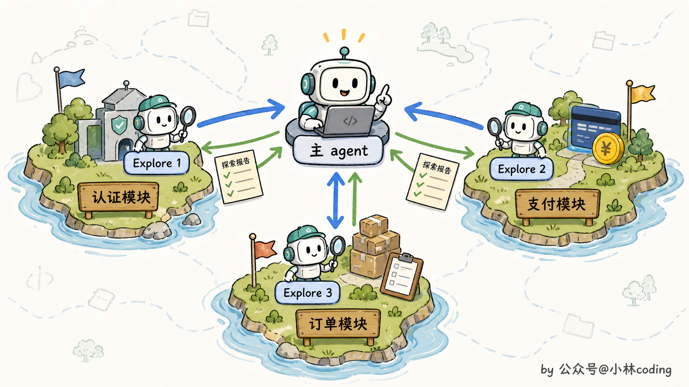
并行派多个 Explore 子 agent 示意图
到这里，你应该能看出 Claude Code 检索系统的层次感了：
- 底层：Grep / Glob / Read 三件套，处理简单定向检索
- 中层：派 Explore 子 agent，处理开放式探索和上下文隔离
- 上层：主 agent 编排整体任务
每一层都有自己的职责，不互相干扰。
七、再深一层：LLM-driven 的多轮迭代循环
到这儿你可能心里还有个疑问：到底是什么让 Claude Code 能「自己探索」？三件套加子 agent 都讲了，但好像还差一层东西没说透。
差的就是「多轮迭代」这层。
我用一个对比讲清楚。
RAG 的范式是「考试发卷子」：用户提问 → 系统一次性召回 Top-K 个片段 → 模型基于这些片段一次性生成答案。中间没有循环，没有反悔，没有「等等再看看」。这是一锤子买卖。
Claude Code 的范式是「现场探案」：用户提问 → 模型说「我先 Grep 一下」→ 系统执行 Grep 返回结果 → 模型看到结果说「嗯，看起来 UserService 比较像，我 Read 一下」→ 系统执行 Read 返回内容 → 模型说「找到了，逻辑是这样的：……」。这是循环、是边查边推理。
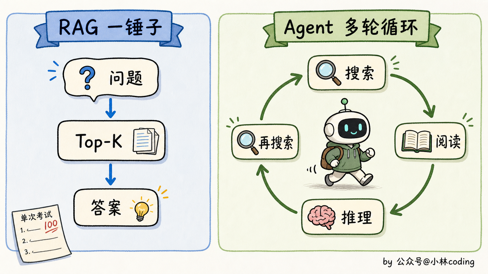
RAG 一锤子 vs Agent 多轮循环对比图
这个循环本质上就是 query 主流程里的一个 while 死循环，源码 src/query.ts 里的核心逻辑大概长这样：
while (true) {
const response = await callLLM(messages)
if (没有 tool_use) break // 模型不再调工具了，循环结束
for (const toolUse of response.toolUses) {
const result = await executeTool(toolUse)
messages.push(result) // 把结果回填到对话历史
}
}
每一轮：模型说话 → 可能带 tool_use → 执行工具 → 把结果回填到对话历史 → 模型继续说话。直到模型自己说「我搞定了」，循环才停下来。
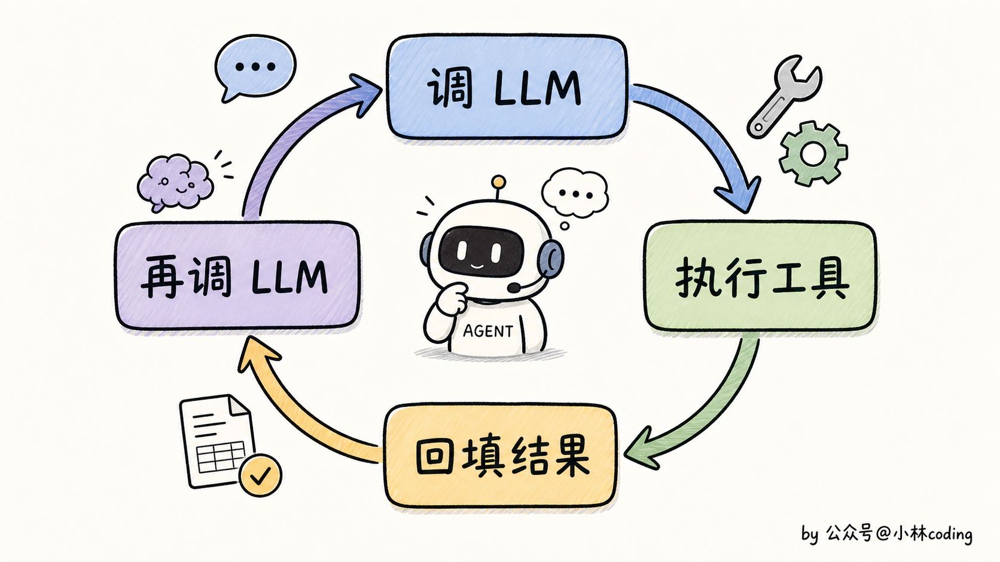
query 多轮循环示意图
这个看似简单的循环，其实是 Agent 范式的灵魂：它给了模型在每一步根据上一步结果调整方向的能力。
你看到 Grep 结果是空的？那就改个关键字再搜。
你看到 Read 出来的代码逻辑不像你以为的？那就再 Grep 几个相关函数看看。
你发现这个文件引用了另一个文件？那就跟过去看下那个文件。
这种「走一步看一步」的能力，是 RAG 的「一次召回」给不了的。RAG 召回错了就是错了，模型只能将错就错。Agent 召回错了，下一轮自己就调整了。
所以你看，Claude Code 用看起来很原始的 grep + read，能做出 RAG 都做不到的事，根本原因就在这层 LLM-driven 的多轮迭代上。
grep 本身不强，但「让 LLM 自己决定每一轮 grep 什么」就强了。
八、回到原题：到底为什么 Claude Code 不用 RAG？
讲了这么多，咱们把答案串起来。Claude Code 不用 RAG 主要有六个原因。
第一，冷启动。grep 是毫秒级响应，开箱即用；RAG 要先建索引，分钟级冷启动，劝退一半用户。
第二，实时性。grep 每次现读磁盘最新版本；RAG 索引会滞后，文件改了得重建。
第三，精确性。grep 是确定性的字符正则匹配，要找 getUserById 就只有它；RAG 是向量近似匹配，会把一堆相似函数糊在一起。
第四，Token 经济。grep 加 Read 按需读取，模型只看真正需要的几行；RAG 一上来就要给整个代码库做 embedding，存储和计算成本都不小。
第五，可解释性。grep 每一步检索过程都对用户透明可审计；RAG 的 Top-K 召回是黑盒，出 bug 没法 debug。
第六，决策权。grep 让 LLM 自己决定每一轮搜什么、读什么，多轮迭代逐步逼近答案；RAG 是一次性把材料丢给模型，模型只能将错就错。
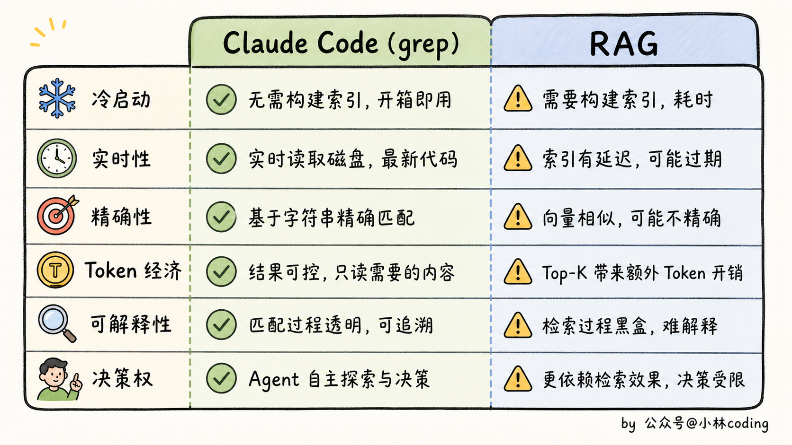
Claude Code grep 与 RAG 六大原因对比表
但如果再升一层，我觉得这背后还有更根本的东西：两种方案代表了两种不同的设计哲学。
RAG 派的潜台词是：LLM 不够强，所以我们要用工程手段帮它把材料准备好。chunking、embedding、向量召回，本质都是「替模型做决定」。
Claude Code 派的潜台词是：LLM 已经足够强，工程的角色是给它准备好工具，把决策权还给它。grep 不替模型做任何决定，它只是个工具。用还是不用、什么时候用、怎么用，全是模型说了算。
Anthropic 押注的是「模型会越来越强」，所以他们选择信任模型的判断能力。这是个长期主义的选择。
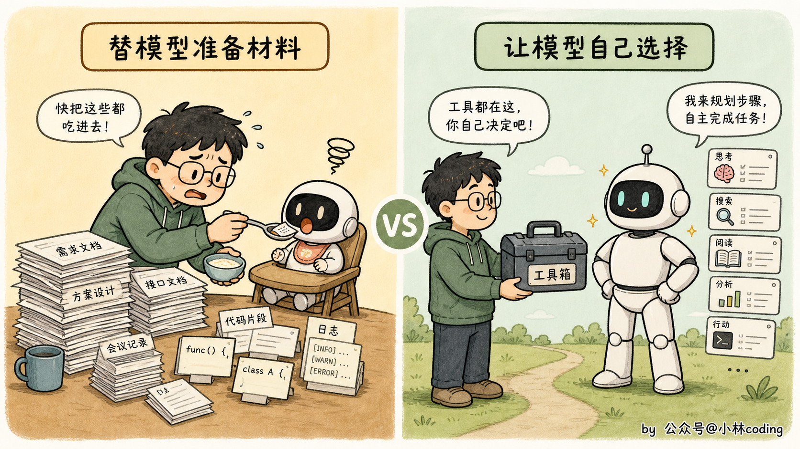
RAG 与 Claude Code 设计哲学对比图
九、那 RAG 是不是该被淘汰了？
讲到这儿，可能有朋友要给我发消息了：「林哥你这是黑 RAG 啊？我们项目还在用 RAG 呢！」
别急，我没说 RAG 该淘汰。RAG 仍然有它的舞台，只是不在 Claude Code 这种场景里。
什么场景适合 RAG？
第一种，巨型代码库加跨仓库检索。比如一些大公司有几十个 monorepo、上千万行代码，靠 grep 在整个公司代码库里搜，性能扛不住，这时候建好索引的 RAG 就有用武之地。
第二种，纯语义查询。比如「找一下处理用户认证相关的代码」这种描述性、模糊性的问题，用关键字 grep 反而不好搜，向量召回这时候反而有优势。
第三种，多人协作的知识库类查询。代码加文档加 Wiki 全部混合检索，这种场景 RAG 是合适的。
而 Claude Code 这套方案，最适合的是单项目、探索式开发、需要精确性、要求实时性的场景，恰好是大部分 AI 编程工具的主战场。
工具是为场景服务的，没有银弹。
最后留一个开放问题给你思考：如果未来 LLM 的上下文窗口能到 1 亿 token，整个代码库都能塞进去，RAG 还有意义吗？grep 还有意义吗？我自己也没想得特别清楚，欢迎你在评论区跟我聊聊。
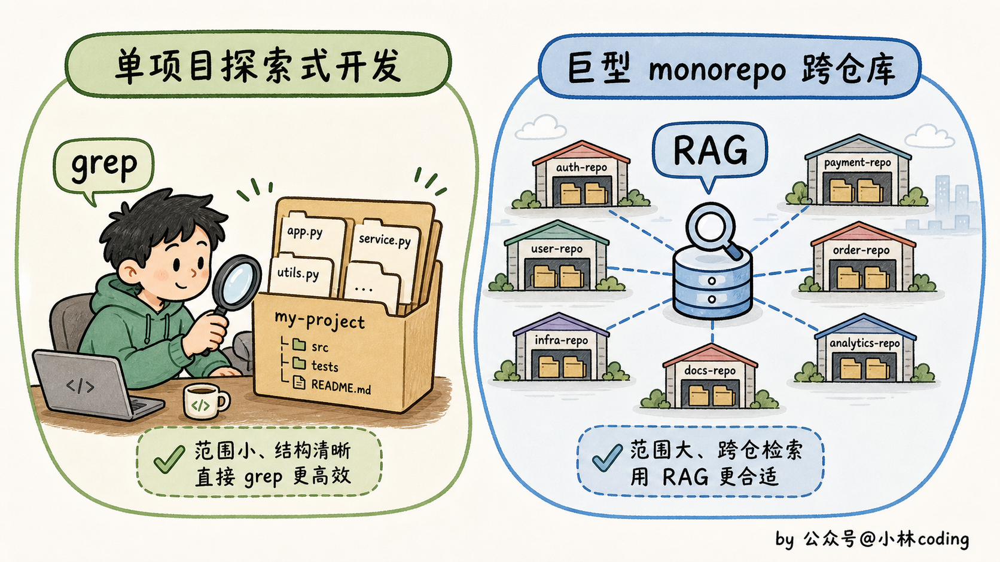
grep 与 RAG 场景适配对比图
结尾：回到面试题
文章开头那个面试题，现在你应该能漂亮地答出来了。我给你一个三句话的精炼版：
Claude Code 不用 RAG 是基于三层考虑。 第一，代码场景下 RAG 有切片破坏结构、向量近似不准、索引滞后等本质问题； 第二，Claude Code 用 Grep 加 Glob 加 Read 三件套加上派子 agent 探索的设计，本质上是把检索决策权还给 LLM 自己，配合多轮迭代循环实现精准定位； 第三，更深层是 Anthropic 信任 LLM 的能力，押注模型会越来越强，所以选择「不替模型做决定」的设计哲学。
这道题表面是问技术选型，实际上问的是「你对 Agent 设计哲学的理解」。
Anthropic 这套思路其实在告诉我们一件事：Agent 不是带工具的聊天机器人，而是会自己做决策的执行体。工程师的职责是给它一套好用的工具，而不是替它做决策。
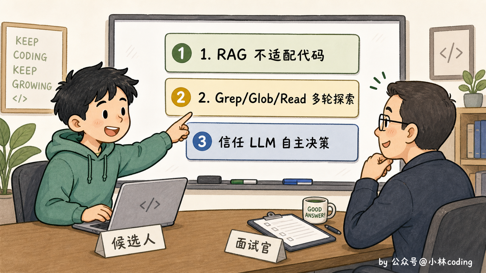
如果你觉得这篇文章有收获，记得点个赞、转发给身边做 Agent 的朋友。
我们下篇见。